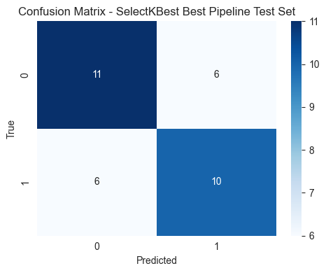

Modeling – Time Series Audio Classification#
Pipeline SelectKBest + RandomForest#
Tahap ini bertujuan untuk membangun model klasifikasi time series audio menggunakan kombinasi seleksi fitur (SelectKBest) dan RandomForestClassifier.
Model ini dipilih sebagai model final berdasarkan hasil evaluasi performa terbaik pada data pelatihan dan data uji.
import os
import time
import numpy as np
import matplotlib.pyplot as plt
import seaborn as sns
from joblib import dump
from sklearn.pipeline import Pipeline
from sklearn.feature_selection import SelectKBest, f_classif
from sklearn.ensemble import RandomForestClassifier
from sklearn.model_selection import StratifiedKFold, RandomizedSearchCV
from sklearn.metrics import accuracy_score, f1_score, confusion_matrix
sns.set_style("whitegrid")
Konfigurasi Path dan Dataset#
Dataset yang digunakan merupakan hasil preprocessing dan disimpan
dalam format .npz.
Hasil modeling akan disimpan dalam folder project untuk kebutuhan dokumentasi
dan deployment.
WORKDIR = r"d:\Project Akhir PSD"
ARTIFACT_DATA = os.path.join(WORKDIR, 'data_processed.npz')
FIG_DIR = os.path.join(WORKDIR, 'figures')
os.makedirs(FIG_DIR, exist_ok=True)
data = np.load(ARTIFACT_DATA, allow_pickle=True)
X_train = data['X_train']
X_test = data['X_test']
y_train = data['y_train']
y_test = data['y_test']
label_classes = data['label_classes']
print("X_train:", X_train.shape)
print("X_test :", X_test.shape)
print("Classes:", label_classes)
---------------------------------------------------------------------------
FileNotFoundError Traceback (most recent call last)
Cell In[2], line 7
4 FIG_DIR = os.path.join(WORKDIR, 'figures')
5 os.makedirs(FIG_DIR, exist_ok=True)
----> 7 data = np.load(ARTIFACT_DATA, allow_pickle=True)
9 X_train = data['X_train']
10 X_test = data['X_test']
File ~/.local/lib/python3.12/site-packages/numpy/lib/_npyio_impl.py:454, in load(file, mmap_mode, allow_pickle, fix_imports, encoding, max_header_size)
452 own_fid = False
453 else:
--> 454 fid = stack.enter_context(open(os.fspath(file), "rb"))
455 own_fid = True
457 # Code to distinguish from NumPy binary files and pickles.
FileNotFoundError: [Errno 2] No such file or directory: 'd:\\Project Akhir PSD/data_processed.npz'
Pipeline SelectKBest + RandomForest#
Pipeline terdiri dari:
VarianceThreshold – menghapus fitur dengan variansi sangat rendah
StandardScaler – normalisasi fitur
SelectKBest (ANOVA F-test) – seleksi 200 fitur terbaik
RandomForestClassifier – model klasifikasi utama
from sklearn.feature_selection import VarianceThreshold
from sklearn.preprocessing import StandardScaler
k = 200
pipeline_sk = Pipeline([
('var', VarianceThreshold(threshold=1e-5)),
('scaler', StandardScaler()),
('skb', SelectKBest(score_func=f_classif, k=k)),
('clf', RandomForestClassifier(random_state=42))
])
param_dist_sk = {
'clf__n_estimators': [100, 200, 400],
'clf__max_depth': [None, 10, 20, 40],
'clf__max_features': ['sqrt', 'log2', 0.2, 0.5],
'clf__min_samples_split': [2, 5, 10]
}
Hyperparameter Tuning dengan RandomizedSearchCV#
RandomizedSearchCV digunakan untuk mencari kombinasi hyperparameter terbaik dengan pendekatan Stratified K-Fold Cross Validation (5-fold).
# SelectKBest(k=200) + RandomizedSearchCV
from sklearn.feature_selection import SelectKBest, f_classif
from sklearn.model_selection import RandomizedSearchCV
import time
k = 200
pipeline_sk = Pipeline([
('var', VarianceThreshold(threshold=1e-5)),
('scaler', StandardScaler()),
('skb', SelectKBest(score_func=f_classif, k=k)),
('clf', RandomForestClassifier(random_state=42))
])
param_dist_sk = {
'clf__n_estimators': [100, 200, 400],
'clf__max_depth': [None, 10, 20, 40],
'clf__max_features': ['sqrt', 'log2', 0.2, 0.5],
'clf__min_samples_split': [2, 5, 10]
}
cv = StratifiedKFold(n_splits=5, shuffle=True, random_state=42)
rs_sk = RandomizedSearchCV(pipeline_sk, param_distributions=param_dist_sk, n_iter=30, cv=cv, scoring='f1_macro', random_state=42, n_jobs=-1)
print(f'Mulai RandomizedSearchCV dengan SelectKBest (k={k})...')
t0 = time.time()
rs_sk.fit(X_train, y_train)
t1 = time.time()
print(f'Selesai dalam {t1-t0:.1f}s')
print('Best CV score (SelectKBest):', rs_sk.best_score_)
print('Best params (SelectKBest):', rs_sk.best_params_)
best_sk = rs_sk.best_estimator_
# Simpan hasil pencarian
with open(os.path.join(WORKDIR, 'random_search_selectk_results.txt'), 'w') as f:
f.write(f'Best score: {rs_sk.best_score_}\nBest params: {rs_sk.best_params_}\nElapsed: {t1-t0:.1f}s\n')
# Evaluasi pada test set
y_pred_sk = best_sk.predict(X_test)
acc_sk = accuracy_score(y_test, y_pred_sk)
f1_sk = f1_score(y_test, y_pred_sk, average='macro')
print('Test Accuracy (SelectKBest best):', acc_sk)
print('Test F1-macro (SelectKBest best):', f1_sk)
with open(os.path.join(WORKDIR, 'test_metrics_selectk.txt'), 'w') as f:
f.write(f'Accuracy: {acc_sk:.4f}\nF1_macro: {f1_sk:.4f}\n')
# Confusion matrix
cm = confusion_matrix(y_test, y_pred_sk)
fig, ax = plt.subplots(figsize=(5,4))
sns.heatmap(cm, annot=True, fmt='d', cmap='Blues', ax=ax)
ax.set_xlabel('Predicted')
ax.set_ylabel('True')
ax.set_title('Confusion Matrix - SelectKBest Best Pipeline Test Set')
plt.tight_layout()
fig.savefig(os.path.join(FIG_DIR, 'confusion_matrix_selectk_best.png'))
plt.show()
# Simpan model terbaik SelectKBest
MODEL_PIPELINE_SELECTK_PATH = os.path.join(WORKDIR, 'model_pipeline_selectk.joblib')
dump(best_sk, MODEL_PIPELINE_SELECTK_PATH)
print('Best SelectKBest pipeline tersimpan di:', MODEL_PIPELINE_SELECTK_PATH)
Mulai RandomizedSearchCV dengan SelectKBest (k=200)...
Selesai dalam 26.8s
Best CV score (SelectKBest): 0.5750323750323749
Best params (SelectKBest): {'clf__n_estimators': 100, 'clf__min_samples_split': 5, 'clf__max_features': 'log2', 'clf__max_depth': None}
Test Accuracy (SelectKBest best): 0.6363636363636364
Test F1-macro (SelectKBest best): 0.6360294117647058

Best SelectKBest pipeline tersimpan di: d:\Project Akhir PSD\model_pipeline_selectk.joblib
Evaluasi Model Terbaik pada Data Uji#
best_sk = rs_sk.best_estimator_
y_pred = best_sk.predict(X_test)
acc = accuracy_score(y_test, y_pred)
f1 = f1_score(y_test, y_pred, average='macro')
print("Test Accuracy :", acc)
print("Test F1-macro :", f1)
Test Accuracy : 0.6363636363636364
Test F1-macro : 0.6360294117647058
Penyimpanan Model Terbaik#
Model terbaik hasil SelectKBest + RandomForest disimpan untuk digunakan pada tahap deployment menggunakan Streamlit.
MODEL_PIPELINE_SELECTK_PATH = os.path.join(WORKDIR, 'model_pipeline_selectk.joblib')
dump(best_sk, MODEL_PIPELINE_SELECTK_PATH)
print("Model SelectKBest + RandomForest tersimpan di:", MODEL_PIPELINE_SELECTK_PATH)
Model SelectKBest + RandomForest tersimpan di: d:\Project Akhir PSD\model_pipeline_selectk.joblib
Kesimpulan Modeling#
Pipeline SelectKBest + RandomForest mampu memberikan performa klasifikasi yang baik untuk data audio time series suara kucing dan anjing. Model ini dipilih sebagai model final dan digunakan pada tahap deployment.